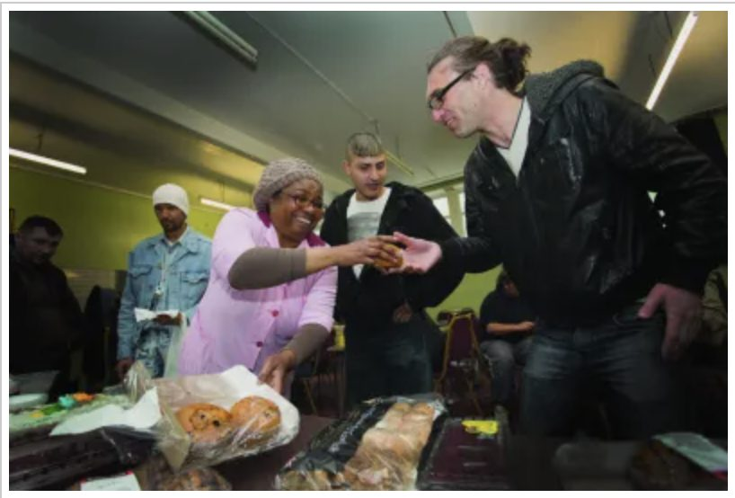
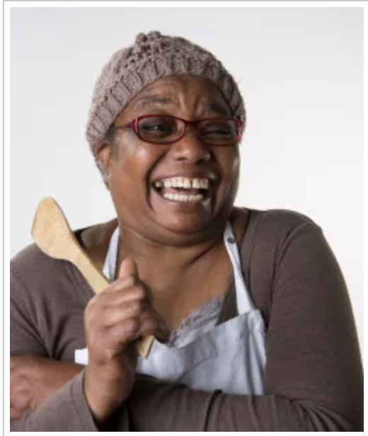
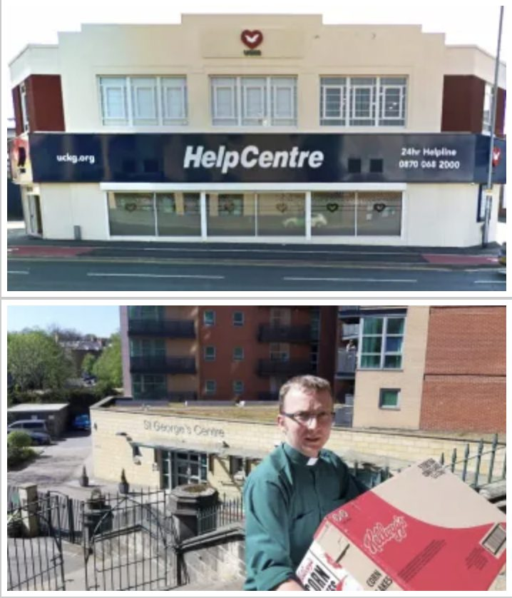
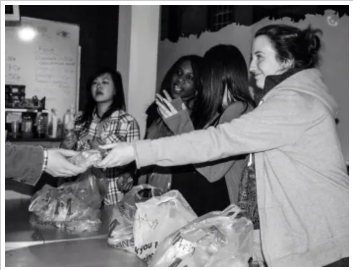
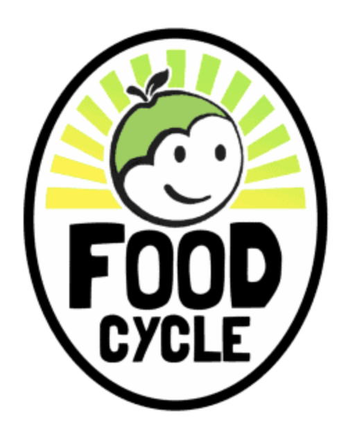
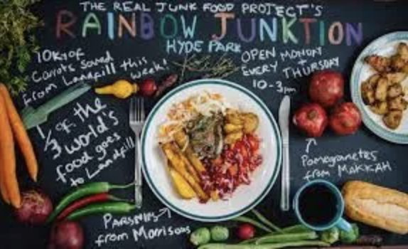
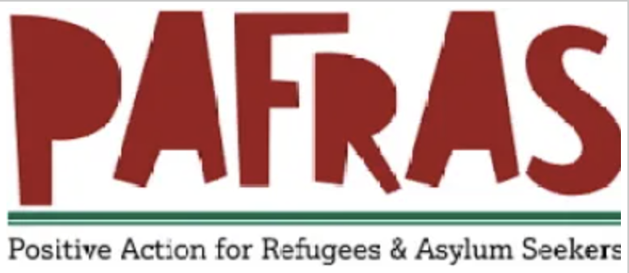
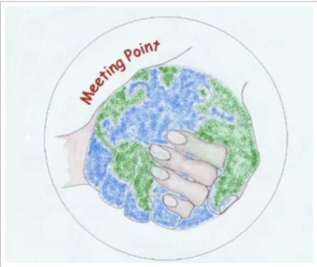
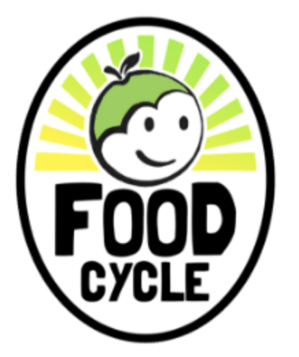

Food Drop Ins
Food drop ins, also known as soup kitchens, provide a very substantial form of food aid provision in the city of Leeds. A significant proportion of the people they serve have experienced or are experiencing homelessness. Two of the main characteristics which drop ins have is that they are accessible without the need for a referral and often involve the serving of a meal or sandwich and/or soup.
Churches and Christian initiatives have been known for running and providing a suitable venue for this type of food provision to take place and there may be some facilities that are aimed specifically at catering for refugees and asylum seekers. Please read below regarding some of the different types of drop ins in Leeds.
To see Christmas Homeless and Food Aid Document please click here:
Download Christmas Food Aid Document

St. George’s Crypt offers a free 3-course lunchtime meal, 5 days a week.
Open: Monday to Friday – Lunch from 12pm – 12:35pm, followed by activities.
Address: St George’s Crypt, Great George Street, LS1 3BR
Phone: (0113) 245 9061
Email: admin@stgeorgescrypt.org.uk
Twitter: @CryptLeeds
Facebook: St George’s Crypt, Leeds
Click on image for website.
St Anne’s Resource Centre

St Anne’s run a breakfast Monday to Friday, 8.30am – 10am
Address: St Anne’s Resource Centre, York Street, LS9 8AA
A number of groups meet in the centre to offer food throughout the week:
- East Leeds Homeless Support Group – Open: Monday – 6:15pm – 7:45pm
- West Yorkshire Hardship – Open: Tuesday – 6:30pm – 7:45pm
- Leeds Homeless Support Group – Open: Thursday – 6pm – 7:30pm
- Focus for Hope / Community Kettle – Open: Friday – 6pm – 7:30pm

Neruka’s offer a free, wholesome meal and a warm atmosphere where people can meet with others and talk through problems or concerns. The initiative is run and hosted by Jesus Christ Apostolic Church. They also signpost people to other organisations that provide similar and vital services that they can access. They can provide small food parcels.
Open: Wednesday – 11.30am – 1.30pm (meal and food parcels)
Address: 50 Gledhow Road, LS8 5ES
Contact: soupkitcheninfo@gmail.com
UCKG Help Centre
Offers food and befriending support from this church based centre.
Open: Saturday – 11am to 1pm
Address: 12 Regent Street, LS2 7QA

This is a meal on Sundays at 1 / 1.25 pm followed by an interactive church service.
Address: St George’s Crypt, Great George Street, LS1 3BR
Phone: 0113 243 8498
Click icon for Website.

Life Church Love Leeds are all about providing a loving environment, food and clothing to some of the most vulnerable adults in Leeds. They exist to provide on-going support for adults who are homeless, living in poverty or who simply need a sense of belonging and friendship. They give out food and drinks at their weekly drop-in, where they offer a befriending service, a friendly social atmosphere and work with similar organisations to provide information and guidance to those who are in need.
Open: Thursday – 12.30pm to 2.30pm
Address: Life Church, 98 Kirkstall Road, LS3 1HJ
Email: hello@lifechurchleeds.com
Hot food provided with takeout given out and food parcels available on Thursdays.
Open: Mondays and Tuesdays for meals and Thursdays for a drop-in with light refreshments, 10-11:30am.
Address: Nile Street, LS2 7QY (Off Bridge Street at the bottom of Eastgate)
Click on the icon for website.

FoodCycle Seacroft
FoodCycle Leeds Seacroft welcomes anyone to attend as a guest and enjoy a FREE hot meal. No need to book. Just turn up on the day!
Open: 6:30pm Tuesdays
Address: Chapel FM Arts Centre, York Road, LS14 6JB
Email: seacroft@foodcycle.org.uk
Click on the icon for the website.
FoodCycle Beeston & Holbeck
FoodCycle Leeds Beeston & Holbeck welcomes anyone to attend as a guest and enjoy a FREE hot meal. No need to book. Just turn up on the day!
Open: 6:30pm Wednesdays
Address: St Luke’s Church, Malvern Road, Holbeck, LS11 8PD
Email: beeston@foodcycle.org.uk
Click on the icon for the website.

Rainbow Junktion
Rainbow Junktion has stayed open throughout the COVID-19 crisis, switching to takeaway only service so as to be able to continue to provide food to the community in the safest way possible. We also now have a pay-as-you-feel shop with essentials for people to take home.
Opening Hours: 11:30am-3pm Monday and Thursday (food served 12-2:30), Pay-as-you-feel cafe and signposting service. 11.30am-4pm Friday as a Foodshare (shopping only).
Click Icon for Facebook Page.
Assistance specifically for refugees and asylum seekers

PAFRAS
Drop-in is open for emergency food parcels, case work, and mental health support. Wednesday 10am-11.30am. Please queue in the car park of St Aidan’s Community Hall.
Phone: 0113 262 2163
Email: info@pafras.org.uk
Click Icon for Website.

Meeting Point
WEEKLY DROP-IN, MONDAYS 2.30PM – 5.30PM at CHRIST CHURCH. Our drop-in provides a safe and welcoming environment, operating appropriately with any Covid safety precautions we feel are necessary.
We provide a hot meal; fresh and dried food parcels and a nearly new shop; confidential advocacy and support; conversation; computer and internet use; activities and children’s arts and crafts.
Phone: 0113 2796700
Email: EMMA.C@CCACP.ORG.UK
Click Icon for Facebook Page.

FoodCycle
Community meal and drop-in at 6:30pm in Beeston (Hamara Centre, LS11 6RD) on Wednesdays and Harehills (St Aidan’s Church Hall, LS8 5QD) on Thursdays.
Phone: 07485 325810
Email: mathew@foodcycle.org.uk